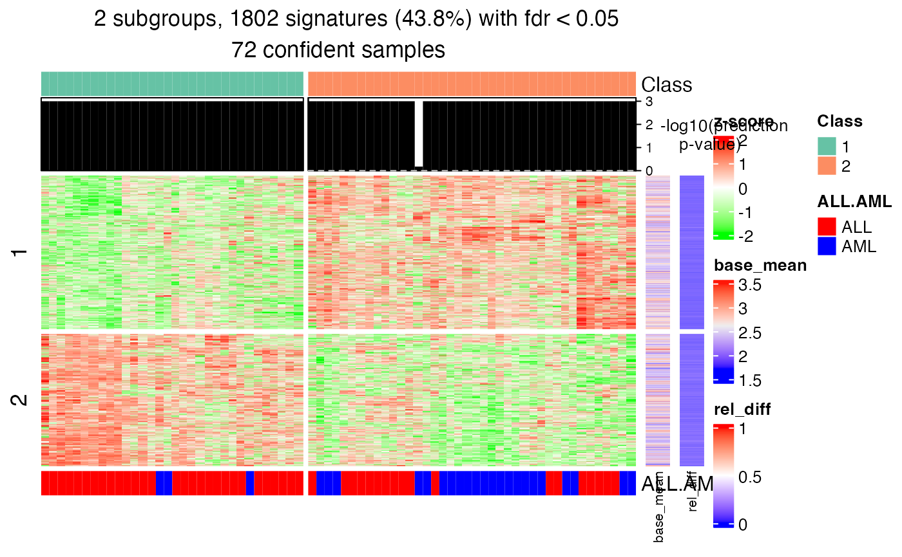
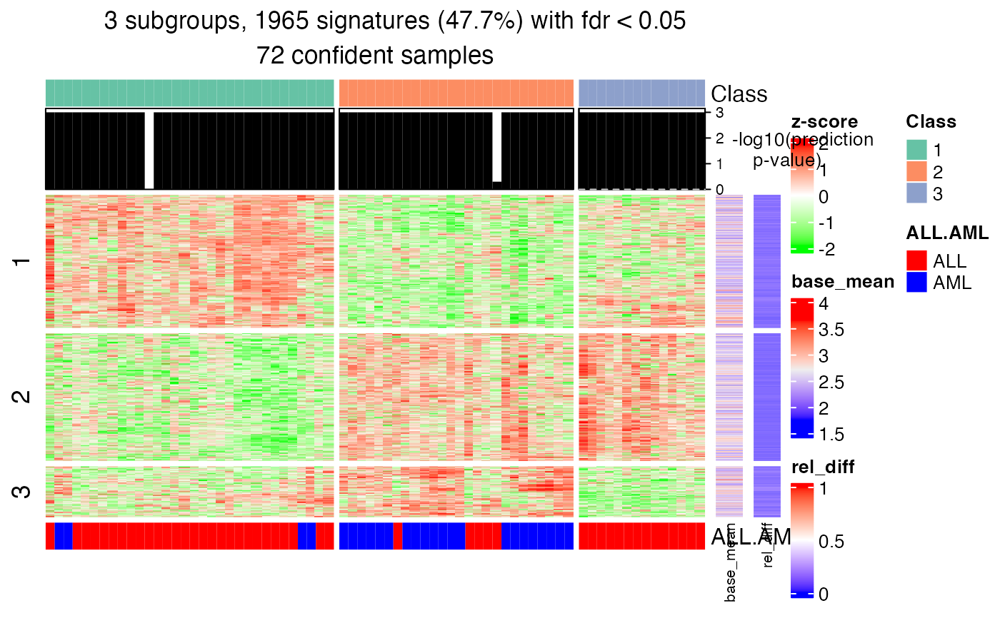

get_signatures-DownSamplingConsensusPartition-method.RdGet signature rows
# S4 method for DownSamplingConsensusPartition
get_signatures(object, k,
p_cutoff = 1, ...)A DownSamplingConsensusPartition-class object.
Number of subgroups.
Cutoff for p-values of class label prediction. Samples with values higher than it are not used for finding signature rows.
Other arguments passed to get_signatures,ConsensusPartition-method.
This function is very similar as get_signatures,ConsensusPartition-method.
# \donttest{
data(golub_cola_ds)
get_signatures(golub_cola_ds, k = 2)
#> * 72/72 samples (in 2 classes) remain after filtering by p-value (<= 1).
#> * cache hash: f69900f48bd1fbe0f5185b1b5ab034a0 (seed 888).
#> * calculating row difference between subgroups by Ftest.
#> * split rows into 2 groups by k-means clustering.
#> * 1802 signatures (43.8%) under fdr < 0.05, group_diff > 0.
#> * making heatmaps for signatures.

get_signatures(golub_cola_ds, k = 3)
#> * 72/72 samples (in 3 classes) remain after filtering by p-value (<= 1).
#> * cache hash: 23ac420732bd2f1040bd1ebf6a68973c (seed 888).
#> * calculating row difference between subgroups by Ftest.
#> * split rows into 3 groups by k-means clustering.
#> * 1965 signatures (47.7%) under fdr < 0.05, group_diff > 0.
#> * making heatmaps for signatures.

# }